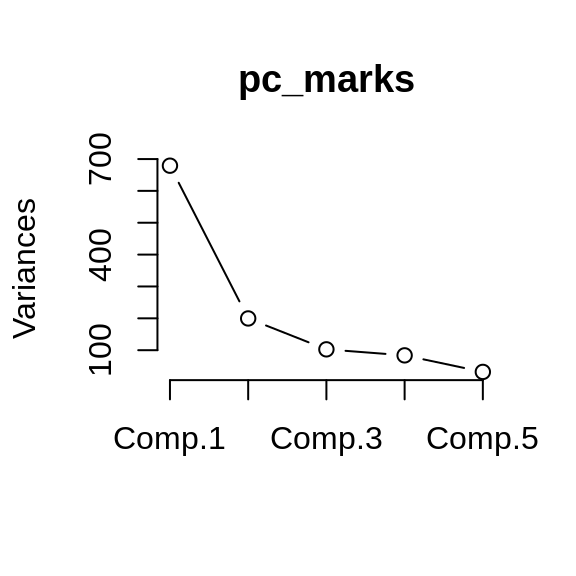
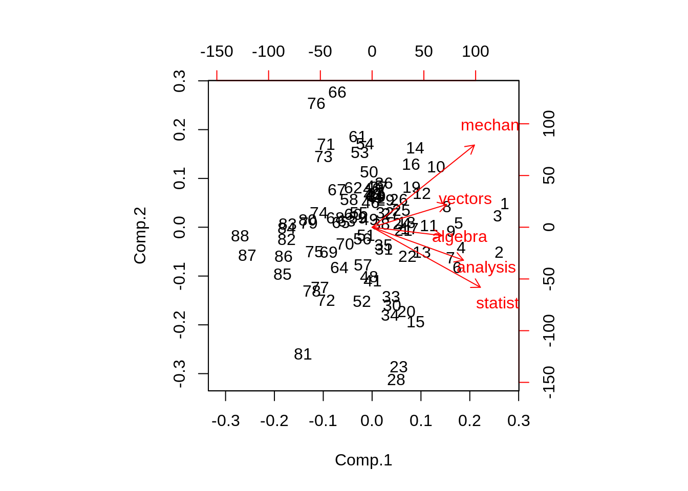
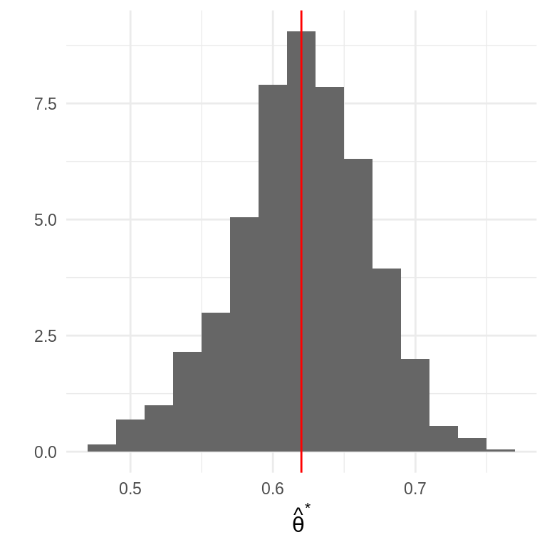

6.2 El estimador bootstrap del error estándar
Entonces, los pasos para calcular estimador bootstrap del error estándar son:
Tenemos una muestra aleatoria \(\textbf{x}=(x_1,x_2,...,x_n)\) proveniente de una distribución de probabilidad desconocida \(P\),
Seleccionamos muestras aleatorias con reemplazo de la distribución empírica.
Calculamos la estadística de interés para cada muestra: \[\hat{\theta}=s(\textbf{x})\] la estimación puede ser la estimación plug-in \(t(P_n)\) pero también puede ser otra.
La distribución de la estadística es la distribución bootstrap, y el estimador bootstrap del error estándar es la desviación estándar de la distribución bootstrap.
dist_empirica <- tibble(id = 1:30, obs = samples$sims[[1]])
dist_empirica_plot <- ggplot(dist_empirica, aes(x = obs)) +
geom_histogram(binwidth = 2, alpha = 0.5, fill = "darkgray") +
geom_vline(aes(color = "mu", xintercept = 5), alpha = 0.5) +
geom_vline(aes(xintercept = samples$x_bar[1], color = "x_bar"),
alpha = 0.8, linetype = "dashed") +
xlim(-15, 20) +
geom_vline(xintercept = 5, color = "red", alpha = 0.5) +
labs(x = "", subtitle = expression("Distribución empírica"~P[n])) +
scale_colour_manual(values = c('mu' = 'red', 'x_bar' = 'blue'), name = '',
labels = c(expression(mu), expression(bar(x))))
samples_boot <- data_frame(sample_boot = 1:3) %>%
mutate(
sims_boot = rerun(3, sample(dist_empirica$obs, replace = TRUE)),
x_bar_boot = map_dbl(sims_boot, mean)
)
muestras_boot_plot <- samples_boot %>%
unnest() %>%
ggplot(aes(x = sims_boot)) +
geom_histogram(binwidth = 2, alpha = 0.5, fill = "darkgray") +
geom_vline(aes(xintercept = samples$x_bar[1]), color = "blue",
linetype = "dashed", alpha = 0.8) +
geom_vline(xintercept = 5, color = "red", alpha = 0.5) +
geom_segment(aes(x = x_bar_boot, xend = x_bar_boot, y = 0, yend = 0.8),
color = "black") +
xlim(-15, 20) +
facet_wrap(~ sample_boot) +
geom_text(aes(x = x_bar_boot, y = 0.95, label = "bar(x)^'*'"),
parse = TRUE, color = "black", alpha = 0.3, hjust = 1) +
labs(x = "", subtitle = "Muestras bootstrap")
boot_dist <- data_frame(sample = 1:10000) %>%
mutate(
sims_boot = rerun(10000, sample(dist_empirica$obs, replace = TRUE)),
mu_hat_star = map_dbl(sims_boot, mean))
boot_muestral_plot <- ggplot(boot_dist, aes(x = mu_hat_star)) +
geom_histogram(alpha = 0.5, fill = "darkgray") +
labs(x = "",
subtitle = expression("Distribución bootstrap de "~hat(mu)^'*')) +
geom_vline(xintercept = 5, color = "red", alpha = 0.5) +
geom_vline(aes(xintercept = samples$x_bar[1]), color = "blue",
linetype = "dashed", alpha = 0.8)
(dist_empirica_plot | plot_spacer()) / (muestras_boot_plot | boot_muestral_plot) 
Describamos la notación y conceptos:
Definimos una muestra bootstrap como una muestra aleatoria de tamaño \(n\) que se obtiene de la distribución empírica \(P_n\) y la denotamos \[\textbf{x}^* = (x_1^*,...,x_n^*).\]
La notación de estrella indica que \(\textbf{x}^*\) no son los datos \(\textbf{x}\) sino una versión de remuestreo de \(\textbf{x}\).
Otra manera de frasearlo: Los datos bootsrtap \(x_1^*,...,x_n^*\) son una muestra aleatoria de tamaño \(n\) seleccionada con reemplazo de la población de \(n\) objetos \((x_1,...,x_n)\).
A cada muestra bootstrap \(\textbf{x}^*\) le corresponde una replicación \(\hat{\theta}^*=s(\textbf{x}^*).\)
el estimador bootstrap de \(se_P(\hat{\theta})\) se define como:
\[se_{P_n}(\hat{\theta}^*)\]
en otras palabras, la estimación bootstrap de \(se_P(\hat{\theta})\) es el error estándar de \(\hat{\theta}\) para conjuntos de datos de tamaño \(n\) seleccionados de manera aleatoria de \(P_n\).
La fórmula \(se_{P_n}(\hat{\theta}^*)\) no existe para casi ninguna estimación diferente de la media, por lo que recurrimos a la técnica computacional bootstrap:
Algoritmo bootstrap para estimar errores estándar
Selecciona \(B\) muestras bootstrap independientes: \[\textbf{x}^{*1},..., \textbf{x}^{*B}\].
Evalúa la replicación bootstrap correspondiente a cada muestra bootstrap: \[\hat{\theta}^{*b}=s(\textbf{x}^{*b})\] para \(b=1,2,...,B.\)
Estima el error estándar \(se_P(\hat{\theta})\) usando la desviación estándar muestral de las \(B\) replicaciones: \[\hat{se}_B = \bigg\{\frac{\sum_{b=1}^B[\hat{\theta}^{*}(b)-\hat{\theta}^*(\cdot)]^2 }{B-1}\bigg\}^{1/2}\]
Notemos que:
La estimación bootstrap de \(se_{P}(\hat{\theta})\), el error estándar de una estadística \(\hat{\theta}\), es un estimador plug-in que usa la función de distribución empírica \(P_n\) en lugar de la distribución desconocida \(P\).
Conforme el número de replicaciones \(B\) aumenta \[\hat{se}_B\approx se_{P_n}(\hat{\theta})\] este hecho equivale a decir que la desviación estándar empírica se acerca a la desviación estándar poblacional conforme crece el número de muestras. La población en este caso es la población de valores \(\hat{\theta}^*=s(x^*)\).
Al estimador de bootstrap ideal \(se_{P_n}(\hat{\theta})\) y su aproximación \(\hat{se}_B\) se les denota estimadores bootstrap no paramétricos ya que estan basados en \(P_n\), el estimador no paramétrico de la población \(P\).
Ejemplo: Error estándar bootstrap de una media
mediaBoot <- function(x){
# x: variable de interés
# n: número de replicaciones bootstrap
n <- length(x)
muestra_boot <- sample(x, size = n, replace = TRUE)
mean(muestra_boot) # replicacion bootstrap de theta_gorro
}
thetas_boot <- rerun(10000, mediaBoot(enlace_muestra$esp_3)) %>% flatten_dbl()
sd(thetas_boot)
#> [1] 3.238793y se compara con \(\hat{se}(\bar{x})\) (estimador plug-in del error estándar):
Nota: Conforme \(B\) aumenta \(\hat{se}_{B}(\bar{x})\to \{\sum_{i=1}^n(x_i - \bar{x})^2 / n \}^{1/2}\), se demuestra con la ley débil de los grandes números.
 Considera el coeficiente de correlación muestral entre la
calificación de \(y=\)esp_3 y la de \(z=\)esp_6: \(\hat{corr}(y,z)=0.9\). ¿Qué tan
precisa es esta estimación?
Considera el coeficiente de correlación muestral entre la
calificación de \(y=\)esp_3 y la de \(z=\)esp_6: \(\hat{corr}(y,z)=0.9\). ¿Qué tan
precisa es esta estimación?
Variación en distribuciones bootstrap
En el proceso de estimación bootstrap hay dos fuentes de variación pues:
La muestra original se selecciona con aleatoriedad de una población.
Las muestras bootstrap se seleccionan con aleatoriedad de la muestra original. Esto es: La estimación bootstrap ideal es un resultado asintótico \(B=\infty\), en esta caso \(\hat{se}_B\) iguala la estimación plug-in \(se_{P_n}\).
En el proceso de bootstrap podemos controlar la variación del segundo aspecto, conocida como implementación de muestreo Monte Carlo, y la variación Monte Carlo decrece conforme incrementamos el número de muestras.
Podemos eliminar la variación Monte Carlo si seleccionamos todas las posibles muestras con reemplazo de tamaño \(n\), hay \({2n-1}\choose{n}\) posibles muestras y si seleccionamos todas obtenemos \(\hat{se}_\infty\) (bootstrap ideal), sin embargo, en la mayor parte de los problemas no es factible proceder así.
set.seed(8098)
pob_plot <- ggplot(data_frame(x = -15:20), aes(x)) +
stat_function(fun = dnormm, args = list(p = c(0.3, 0.7), mu = c(-2, 8),
sigma = c(3.5, 3)), alpha = 0.8) +
geom_vline(aes(color = "mu", xintercept = 5), alpha = 0.5) +
scale_colour_manual(values = c('mu' = 'red'), name = '',
labels = expression(mu)) +
labs(x = "", y = "", subtitle = "Población", color = "") +
theme(axis.text.y = element_blank())
samples <- data_frame(sample = 1:6) %>%
mutate(
sims = rerun(6, rnormm(50, p = c(0.3, 0.7), mu = c(-2, 8),
sigma = c(3.5, 3))),
x_bar = map_dbl(sims, mean))
means_boot <- function(n, sims) {
rerun(n, mean(sample(sims, replace = TRUE))) %>%
flatten_dbl()
}
samples_boot <- samples %>%
mutate(
medias_boot_30_1 = map(sims, ~means_boot(n = 30, .)),
medias_boot_30_2 = map(sims, ~means_boot(n = 30, .)),
medias_boot_1000_1 = map(sims, ~means_boot(n = 1000, .)),
medias_boot_1000_2 = map(sims, ~means_boot(n = 1000, .))
)
emp_dists <- samples_boot %>%
unnest(cols = sims) %>%
rename(obs = sims)
emp_dists_plots <- ggplot(emp_dists, aes(x = obs)) +
geom_histogram(binwidth = 2, alpha = 0.5, fill = "darkgray") +
geom_vline(aes(color = "mu", xintercept = 5), alpha = 0.5,
show.legend = FALSE) +
geom_vline(aes(xintercept = x_bar, color = "x_bar"), show.legend = FALSE,
alpha = 0.8, linetype = "dashed") +
xlim(-15, 20) +
geom_vline(xintercept = 5, color = "red", alpha = 0.5) +
labs(x = "", y = "", subtitle = expression("Distribución empírica"~P[n])) +
scale_colour_manual(values = c('mu' = 'red', 'x_bar' = 'blue'), name = '',
labels = c(expression(mu), expression(bar(x)))) +
facet_wrap(~ sample, ncol = 1) +
theme(strip.background = element_blank(), strip.text.x = element_blank(),
axis.text.y = element_blank())
boot_dists_30 <- samples_boot %>%
unnest(cols = c(medias_boot_30_1, medias_boot_30_2)) %>%
pivot_longer(cols = c(medias_boot_30_1, medias_boot_30_2),
values_to = "mu_hat_star", names_to = "boot_trial",
names_prefix = "medias_boot_30_")
boot_dists_30_plot <- ggplot(boot_dists_30, aes(x = mu_hat_star)) +
geom_histogram(alpha = 0.5, fill = "darkgray") +
labs(x = "", y = "",
subtitle = expression("Distribución bootstrap B = 30")) +
geom_vline(xintercept = 5, color = "red", alpha = 0.5) +
geom_vline(aes(xintercept = x_bar), color = "blue",
linetype = "dashed", alpha = 0.8) +
facet_grid(sample~boot_trial) +
theme(strip.background = element_blank(), strip.text.y = element_blank(),
axis.text.y = element_blank())
boot_dists_1000 <- samples_boot %>%
unnest(cols = c(medias_boot_1000_1, medias_boot_1000_2)) %>%
pivot_longer(cols = c(medias_boot_1000_1, medias_boot_1000_2),
values_to = "mu_hat_star", names_to = "boot_trial",
names_prefix = "medias_boot_1000_")
boot_dists_1000_plot <- ggplot(boot_dists_1000, aes(x = mu_hat_star)) +
geom_histogram(alpha = 0.5, fill = "darkgray") +
labs(subtitle = expression("Distribución bootstrap B = 1000"),
x = "", y = "") +
geom_vline(xintercept = 5, color = "red", alpha = 0.5) +
geom_vline(aes(xintercept = x_bar), color = "blue",
linetype = "dashed", alpha = 0.8) +
facet_grid(sample~boot_trial) +
scale_colour_manual(values = c('mu' = 'red', 'x_bar' = 'blue'), name = '',
labels = c(expression(mu), expression(bar(x)))) +
theme(strip.background = element_blank(), strip.text.y = element_blank(),
strip.text.x = element_blank(), axis.text.y = element_blank())
(pob_plot | plot_spacer() | plot_spacer()) /
(emp_dists_plots | boot_dists_30_plot | boot_dists_1000_plot) +
plot_layout(heights = c(1, 5))En la siguiente gráfica mostramos 6 posibles muestras de tamaño 50 simuladas de la población, para cada una de ellas se graficó la distribución empírica y se se realizan histogramas de la distribución bootstrap con \(B=30\) y \(B=1000\), en cada caso hacemos dos repeticiones, notemos que cuando el número de muestras bootstrap es grande las distribuciones bootstrap son muy similares (para una muestra de la población dada), esto es porque disminuimos el erro Monte Carlo. También vale la pena recalcar que la distribución bootstrap está centrada en el valor observado en la muestra (línea azúl punteada) y no en el valor poblacional sin embargo la forma de la distribución es similar a lo largo de las filas.

Entonces, ¿cuántas muestras bootstrap?
Incluso un número chico de replicaciones bootstrap, digamos \(B=25\) es informativo, y \(B=50\) con frecuencia es suficiente para dar una buena estimación de \(se_P(\hat{\theta})\) (Efron and Tibshirani (1993)).
Cuando se busca estimar error estándar Hesterberg (2015) recomienda \(B=1000\) muestras, o \(B=10,000\) muestras dependiendo la presición que se busque.
seMediaBoot <- function(x, B){
thetas_boot <- rerun(B, mediaBoot(x)) %>% flatten_dbl()
sd(thetas_boot)
}
B_muestras <- data_frame(n_sims = c(5, 25, 50, 100, 200, 400, 1000, 1500, 3000,
5000, 10000, 20000)) %>%
mutate(est = map_dbl(n_sims, ~seMediaBoot(x = enlace_muestra$esp_3, B = .)))
#> Warning: `data_frame()` is deprecated, use `tibble()`.
#> This warning is displayed once per session.
B_muestras
#> # A tibble: 12 x 2
#> n_sims est
#> <dbl> <dbl>
#> 1 5 3.08
#> 2 25 3.20
#> 3 50 3.17
#> 4 100 3.04
#> 5 200 3.36
#> 6 400 3.24
#> 7 1000 3.17
#> 8 1500 3.38
#> 9 3000 3.27
#> 10 5000 3.29
#> 11 10000 3.27
#> 12 20000 3.26Ejemplo componentes principales: calificaciones en exámenes
Los datos marks (Mardia, Kent y Bibby, 1979) contienen los puntajes de 88 estudiantes en 5 pruebas: mecánica, vectores, álgebra, análisis y estadística. Cada renglón corresponde a la calificación de un estudiante en cada prueba.
data(marks, package = "ggm")
glimpse(marks)
#> Observations: 88
#> Variables: 5
#> $ mechanics <dbl> 77, 63, 75, 55, 63, 53, 51, 59, 62, 64, 52, 55, 50, 65, 31…
#> $ vectors <dbl> 82, 78, 73, 72, 63, 61, 67, 70, 60, 72, 64, 67, 50, 63, 55…
#> $ algebra <dbl> 67, 80, 71, 63, 65, 72, 65, 68, 58, 60, 60, 59, 64, 58, 60…
#> $ analysis <dbl> 67, 70, 66, 70, 70, 64, 65, 62, 62, 62, 63, 62, 55, 56, 57…
#> $ statistics <dbl> 81, 81, 81, 68, 63, 73, 68, 56, 70, 45, 54, 44, 63, 37, 73…Entonces un análisis de componentes principales proseguiría como sigue:
pc_marks <- princomp(marks)
summary(pc_marks)
#> Importance of components:
#> Comp.1 Comp.2 Comp.3 Comp.4 Comp.5
#> Standard deviation 26.0600955 14.1291852 10.13060363 9.15149631 5.63935825
#> Proportion of Variance 0.6191097 0.1819910 0.09355915 0.07634838 0.02899179
#> Cumulative Proportion 0.6191097 0.8011007 0.89465983 0.97100821 1.00000000
loadings(pc_marks)
#>
#> Loadings:
#> Comp.1 Comp.2 Comp.3 Comp.4 Comp.5
#> mechanics 0.505 0.749 0.301 0.295
#> vectors 0.368 0.207 -0.419 -0.781 0.190
#> algebra 0.346 -0.146 -0.924
#> analysis 0.451 -0.301 -0.594 0.521 0.286
#> statistics 0.535 -0.547 0.600 -0.178 0.151
#>
#> Comp.1 Comp.2 Comp.3 Comp.4 Comp.5
#> SS loadings 1.0 1.0 1.0 1.0 1.0
#> Proportion Var 0.2 0.2 0.2 0.2 0.2
#> Cumulative Var 0.2 0.4 0.6 0.8 1.0
plot(pc_marks, type = "lines")

Los cálculos de un análisis de componentes principales involucran la matriz de covarianzas empírica \(G\) (estimaciones plug-in)
\[G_{jk} = \frac{1}{88}\sum_{i=1}^88(x_{ij}-\bar{x_j})(x_{ik}-\bar{x_k})\]
para \(j,k=1,2,3,4,5\), y donde \(\bar{x_j} = \sum_{i=1}^88 x_{ij} / 88\) (la media de la i-ésima columna).
G <- cov(marks) * 87 / 88
G
#> mechanics vectors algebra analysis statistics
#> mechanics 302.2147 125.59969 100.31599 105.11415 116.15819
#> vectors 125.5997 170.87810 84.18957 93.59711 97.88688
#> algebra 100.3160 84.18957 111.60318 110.83936 120.48567
#> analysis 105.1142 93.59711 110.83936 217.87603 153.76808
#> statistics 116.1582 97.88688 120.48567 153.76808 294.37177Los pesos y las componentes principales no son mas que los eigenvalores y eigenvectores de la matriz de covarianzas \(G\), estos se calculan a través de una serie de de manipulaciones algebraicas que requieren cálculos del orden de p3 (cuando G es una matriz de tamaño p\(\times\)p).
eigen_G <- eigen(G)
lambda <- eigen_G$values
v <- eigen_G$vectors
lambda
#> [1] 679.12858 199.63388 102.62913 83.74988 31.80236
v
#> [,1] [,2] [,3] [,4] [,5]
#> [1,] 0.5053373 0.74917585 0.3006046 0.294631757 -0.07873256
#> [2,] 0.3682215 0.20692361 -0.4185473 -0.781332853 -0.18955902
#> [3,] 0.3456083 -0.07622065 -0.1457830 -0.003348995 0.92384059
#> [4,] 0.4512152 -0.30063472 -0.5944322 0.520724416 -0.28551729
#> [5,] 0.5347961 -0.54747360 0.5998773 -0.177611847 -0.15121842- Proponemos el siguiente modelo simple para puntajes correlacionados:
\[\textbf{x}_i = Q_i \textbf{v}\]
donde \(\textbf{x}_i\) es la tupla de calificaciones del i-ésimo estudiante, \(Q_i\) es un número que representa la habilidad del estudiante y \(\textbf{v}\) es un vector fijo con 5 números que aplica a todos los estudiantes. Si este modelo simple fuera cierto, entonces únicamente el \(\hat{\lambda}_1\) sería positivo y \(\textbf{v} = \hat{v}_1\). Sea \[\hat{\theta}=\sum_{i=1}^5\hat{\lambda}_i\] el modelo propuesto es equivalente a \(\hat{\theta}=1\), inculso si el modelo es correcto, no esperamos que \(\hat{\theta}\) sea exactamente uno pues hay ruido en los datos.
El valor de \(\hat{\theta}\) mide el porcentaje de la varianza explicada en la primer componente principal, ¿qué tan preciso es \(\hat{\theta}\)? La complejidad matemática en el cálculo de \(\hat{\theta}\) es irrelevante siempre y cuando podamos calcular \(\hat{\theta}^*\) para una muestra bootstrap, en esta caso una muestra bootsrtap es una base de datos de 88 \(\times\) 5 \(\textbf{X}^*\), donde las filas \(\bf{x_i}^*\) de \(\textbf{X}^*\) son una muestra aleatoria de tamaño 88 de la verdadera matriz de datos.
pc_boot <- function(){
muestra_boot <- sample_n(marks, size = 88, replace = TRUE)
G <- cov(muestra_boot) * 87 / 88
eigen_G <- eigen(G)
theta_hat <- eigen_G$values[1] / sum(eigen_G$values)
}
B <- 1000
thetas_boot <- rerun(B, pc_boot()) %>% flatten_dbl()Veamos un histograma de las replicaciones de \(\hat{\theta}\):
ggplot(data_frame(theta = thetas_boot)) +
geom_histogram(aes(x = theta, y = ..density..), binwidth = 0.02,
fill = "gray40") +
geom_vline(aes(xintercept = mean(theta)), color = "red") +
labs(x = expression(hat(theta)^"*"), y = "")
Estas tienen un error estándar
y media
la media de las replicaciones es muy similar a la estimación \(\hat{\theta}\), esto indica que \(\hat{\theta}\) es cercano a insesgado.
- El eigenvetor \(\hat{v}_1\) correspondiente al mayor eigenvalor se conoce como primera componente de \(G\), supongamos que deseamos resumir la calificación de los estudiantes mediante un único número, entonces la mejor combinación lineal de los puntajes es
\[y_i = \sum_{k = 1}^5 \hat{v}_{1k}x_{ik}\]
esto es, la combinación lineal que utiliza las componentes de \(\hat{v}_1\) como ponderadores. Si queremos un resumen compuesto por dos números \((y_i,z_i)\), la segunda combinación lineal debería ser:
\[z_i = \sum_{k = 1}^5 \hat{v}_{2k}x_{ik}\]
Las componentes principales \(\hat{v}_1\) y
\(\hat{v}_2\) son estadísticos, usa bootstrap para dar una medición de su
variabilidad calculando el error estándar de cada una.
Referencias
Efron, Bradley, and Robert J. Tibshirani. 1993. An Introduction to the Bootstrap. Monographs on Statistics and Applied Probability 57. Boca Raton, Florida, USA: Chapman & Hall/CRC.
Hesterberg, Tim C. 2015. “What Teachers Should Know About the Bootstrap: Resampling in the Undergraduate Statistics Curriculum.” The American Statistician 69 (4). Taylor & Francis:371–86. https://doi.org/10.1080/00031305.2015.1089789.